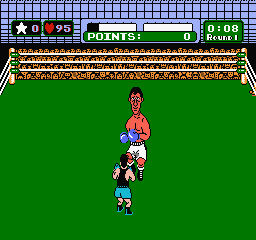
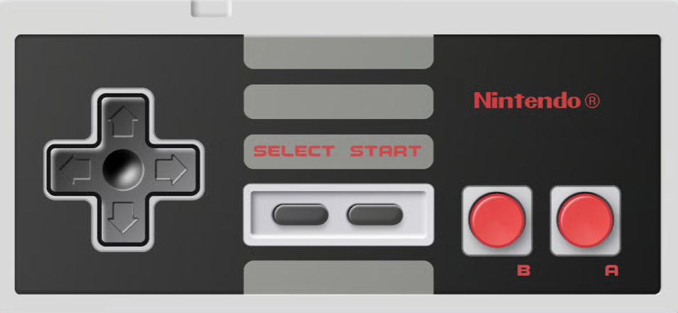

Overview

Mike Tyson's Punch-Out!! is a sports boxing fighting video game for the Nintendo Entertainment System (NES) developed and published by Nintendo in 1987.
History
Part of the Punch-Out!! series, the game was originally released in arcades as Punch-Out!! (1984) and later as Super Punch-Out!! (1985). The NES version was released in North America on October 18, 1987, and in Europe on December 15, 1987. Nintendo released the Mike Tyson version of Punch-Out!! in Japan soon after its North American release.
Nintendo of America's founder and former president, Minoru Arakawa, attended a boxing match during the Heavyweight Unification Series (also known as the Heavyweight World Series) that featured Mike Tyson. Arakawa was so amazed with Tyson's "power and skill" that he decided to sign a licensing agreement with Tyson to use his name and likeness in the game. This was a risk for Nintendo since this transaction occurred before Mike Tyson won the World Boxing Council (WBC) heavyweight title. However, he ended up becoming the youngest heavyweight champion in history. These results ended up being beneficial for Nintendo, as Tyson's popularity skyrocketed after he won the title, and the game became a commercial success.
Gameplay

In the game, the player controls Little Mac, a young and small underdog boxer from the Bronx, New York, as he fights his way up the ranks of the World Video Boxing Association (WVBA) to become the champion. The player must defeat a series of opponents, each with their own unique fighting style and patterns, in order to progress through the game. The ultimate goal is to defeat the reigning champion, Mike Tyson, in a final match.
Moves
Little Mac has a limited moveset compared to most of the opponents. He can throw left and right jabs, left and right body blows, and an uppercut. The uppercut can only be used once the player earns a Star which is done by counter-punching the opponent directly before or after certain attacks. Mac can have up to 3 stars at a time, but they are lost whenever he is hit or knocked down. To defend, Mac can dodge to the left or right, duck, and block punches by putting up his guard. Go to NES Controls.
Health Bar
Both Little Mac and his opponents have a Health Bar at the top of the screen that depletes when taking hits. When the health bar drops completely to zero, that fighter gets knocked down.
Heart Counter
Little Mac also has a Heart Counter that decreases by 3 points when hit by the opponent and decreased by 1 point when blocking an attack or the opponent dodges/blocks Mac's attack. When the heart count reaches 0, Little Mac temporarily turn different shades of pink and appear exhausted. He is not able to attack, but can still dodge, duck, and block. Mac can regain his hearts and normal color palette only by avoiding the opponent's punches. Also, his heart meter immediately drops to 0 when he is knocked down, but can regain some back by getting up.
How to Win
A bout can end by a knockout (KO), if a fighter is knocked down and can't get up before the referee counts to 10; by a technical knockout (TKO), if a fighter is knocked down three times in one round; or by decision if the bout lasts 3 full rounds without a clear winner. In order to win by decision, the player must accumulate a certain amount of points that are obtained by punching the opponent However, there are some bouts that can't be won by decision and will automatcially lose if the opponent is not knocked out. Little Mac can only get up 3 time total in any given bout, but if he is knocked down a 4th time, he will not be able to get up and thus lose by knockout.
NES Controls

The D–Pad is used to control Little Mac's movement. Press ← on the D–Pad to dodge left, → to dodge right. Tap ← when dodging right, or → when dodging left to quickly return to the center. Hold ↓ on the D–Pad to block punches. Tap twice quickly ↓↓ on the D–Pad to duck underneath a punch.
The A Button is used for right hand punches. Tap the A Button without touching the D–Pad to throw a right hand to the body. Tap the A Button while holding ↑ on the D–Pad for a right jab.
The B Button is used for left hand punches. Tap the B Button without touching the D–Pad to throw a left hand to the body. Tap the B Button while holding ↑ on the D–Pad for a left jab.
In between rounds, press the Select Button to instruct your coach, Doc Louis will help Mac and restore a bit of his health/stamina. This can only be performed once per match.
Pressing the Start Button exchanges 1 star for an uppercut attack. If there are no stars, this move will not work.